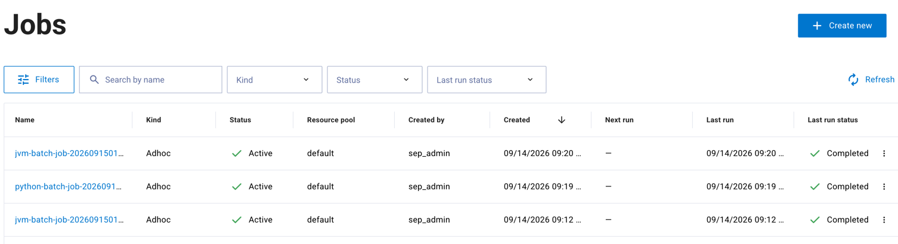
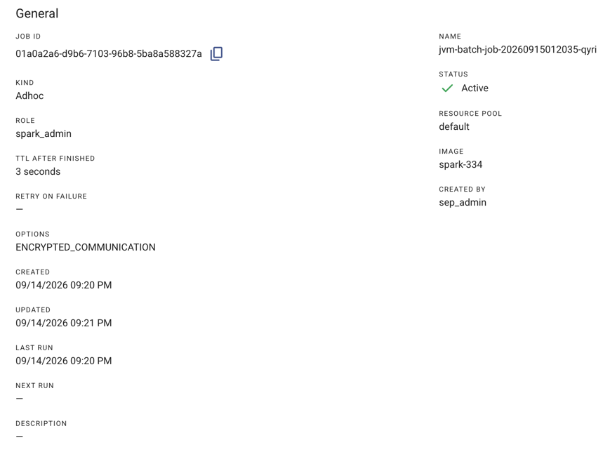
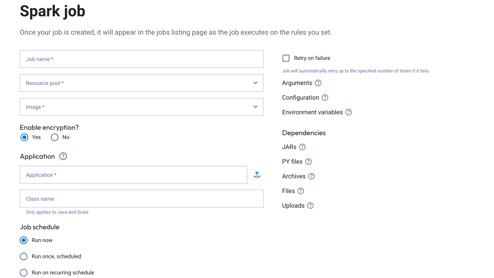

Jobs#
Click Jobs in the Dell Data Processing Engine section of the Starburst Enterprise web UI to view and manage batch jobs. You must have the Spark runtime UI privilege to access the Jobs pane.
The Jobs pane shows a list of jobs and information about each job:

Name: The name given to the job.
Kind: The job type, such as Adhoc, Scheduled, or Recurring.
Status: Whether the job is Active or Inactive.
Resource pool: The name of the resource pool assigned to the job.
Created by: The user who created the job.
Created: The timestamp for when the job was created.
Next run: The scheduled time of the next run (Scheduled and Recurring jobs only).
Last run: The timestamp of the most recent execution.
Last run status: The status of the most recent run.
Click the options menu in a column header to Hide column, or select Manage columns to show or hide any of the available columns. Click Reset to restore the default columns.
Click Filters to open the filter panel and narrow the job list by various criteria, such as name, kind, status, or date ranges for when jobs were created, started, or finished. Click Apply to apply the filters or Reset to clear them.
Search by name matches partial and approximate names, so an exact name is not required. The list loads more entries as you scroll.
The options menu for a job provides the following actions:
View details: View the job configuration and execution details.
Edit job: Modify the job configuration.
Run job: Manually trigger a job run.
Terminate current run: Stop the currently running execution.
Clone job: Create a copy of the job.
Delete job: Permanently delete the job.
View job details#
Click View details from the options menu to open the job summary page. The summary displays the full job definition, organized into the following sections:

General: Job ID, name, kind, status, role, resource pool, image, retry settings, schedule, and timestamps for when the job was created, updated, last ran, and is next scheduled to run.
Application: Main file path, main class, and arguments.
Resources: Core, memory, and GPU allocation for the driver and executor.
Dependencies: JARs, Python files, files, archives, and uploads attached to the job.
Spark properties: Custom Spark configuration properties.
Environment variables: Environment variables passed to the job.
The Recent runs table at the bottom of the page lists the most recent runs with their run ID, resource pool, status, and timestamps for when each run was created, started, and finished. Click View all runs to see the full run history.
Create batch jobs#
To create a Spark batch job:

Click Create new.
Enter a Job name, then select a resource pool and an Image.
Choose whether to Enable encryption. Defaults to Yes.
In the Application section, enter the file path URL for your application, or click the upload icon to upload an application file. Optionally enter a Class name (Java and Scala only).
In the Job schedule section, choose a schedule:
Run now: Run the job immediately.
Run once, scheduled: Select a Time zone and a Date and time for a single run.
Run on recurring schedule: Set Repeat every with an Interval and Unit, or enable Enter cron expression to define the schedule with a cron expression.
Optionally configure Arguments, Configuration, Environment variables, Dependencies (JARs, PY files, Archives, Files, Uploads), or Retry on failure.
Click Create Spark job.
Warning
Batch jobs running on a node may fail if the node is rebooted. Automatic failover to another node is not guaranteed.
Edit batch job#
To modify a job, click the options menu for the job and select Edit job. The dialog opens with the job’s current configuration and uses the same fields as creating a job. Click Save Spark job to save your changes, which apply to the next run of the job.
Run batch job#
To run a job manually, click the options menu for the job and select Run job. In the Run adhoc job confirmation dialog, click Run job.
Clone batch job#
Cloning a job creates a new job that reuses the configuration of an existing job.
To clone a job, click the options menu for the job and select Clone job.
Delete batch job#
To delete a job, click the options menu for the job and select Delete job.